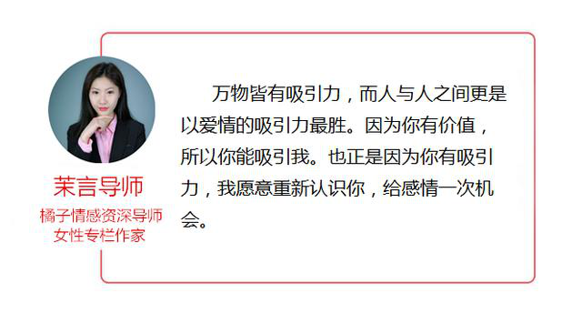
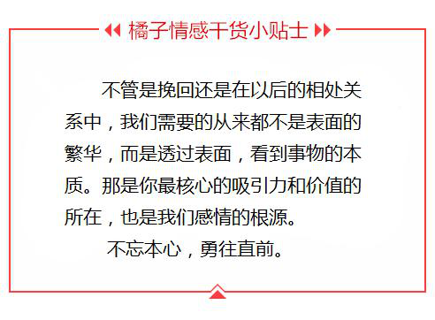

- 返回顶部
- 4006-299-520
- 在线咨询
- 微信公众号

大家好，我们是橘子情感。专注情感，为爱而生。 从业八年以来，橘子情感始终秉承着“专注情感、专业服务、专心经营”的原则， 致力于为大家提供挽回爱情、挽救婚姻、 分离小三、订制爱情等两性情感服务。
“我挽回不了她，是不是就是因为我没钱、没势、而且不帅？”
难道所有的女人喜欢的都是又有钱、又有势还帅的男人吗？
答案当然不是。
有钱有势又帅的男人只是表面的现象，而深层次的原因，是他们有吸引力。
你挽回不了你的她，就是因为你没有吸引力，你的价值一直停滞不前，在不断下降。
重点是你还不自知，只是沉迷表面，根本看不到本质，意识不到自己的问题，那么你又有什么资格去挽回她？有什么资格去陪伴她？
所以说，我们挽回爱情的基础，就是自己的吸引力。
只有我们的吸引力够好，你的价值提升，挽回成功就是正常的事情。
那么，我们在挽回爱情时，到底要怎么提升自己的吸引力呢？
因为每个人每份感情都不一样，必须是具体问题具体分析，根据每个人的特质不同，来进行不同方面的提升。
在这里，我是把我接手的案例中的共性，哪些吸引力是必须具备的，给大家讲一下。
在挽回爱情过程中，最常见的不是比谁更爱谁，而是卑躬屈膝的乞求对方复合。 因为我们在乎，感情已经成为了我们生活中必不可少的一部分。可怕的不是从未拥有过，而是拥有之后失去。这不是一件丢人的事，我们也不必为了自己放不下这份感情而自责。 正是因为我们的在乎，才证明，我们是有血有肉的活生生的人。
但是，丢人的是在挽回过程中，我们迷失了自己，我们为了乞求复合而做出很多的疯狂甚至是有背自己正常行为的事情。比如说，无敌电话连环call、信息轰炸、甚至是自残。
这些行为只会让你自己面目全非，但是对于挽回却是没有任何一点作用。因为一个人的理智都不在，又何谈吸引力和能够带来的价值呢。
所以，我们在挽回时，一定要坚持自己的框架，做事情要理智而且又主见。挽回不可怕，可怕的是你在挽回过程中迷失了你自己。在挽回的过程中，我们重建自己的吸引力，其实就是一个寻找自己，塑造完美自己的一个过程。只有我们坚持自己，心态稳住，不自暴自弃，也不自怨自艾，理智客观的分析感情中的问题，我们的吸引力才会重建。
我在很多的挽回文章中，都常常说一个问题：直男思维。直男思维怎么了，直男思维是挽回过程中的一大障碍，更是导致两人感情破裂的重要因素。什么是直男思维，通俗的说，就是对女人的世界你一无所知。你所知道的大部分也都是浮于表面和自己的主观臆想。
真正有魅力的，挽回成功男人，都有一个共性。他们熟知女性的心理，他们能够及时的察觉并且对女性的行为作出及时准确反馈，一旦是这样的男人，那么他们的感情就算是有问题也会被掐死在摇篮之中，绝对不会因为主观的因素导致感情的破裂。
那么，熟知两性的心理并且灵活运用，很难吗。当然不难。同样都是人，只是两种人的思考方式和行为习惯不同而已，只要你能够在专业的心理师和两性专家的指导下练习一下，就很快能够运用的得心应手。同时这也是我们为什么能够说挽回的成功率高的原因。因为专业，所以有能力。而在挽回中也是一样的，你对女性了如指掌，那么你的吸引力会低吗，你会挽回不成功吗？
很多心灵鸡汤一直在说，“我跟他在一起，就是因为在一起我很快乐，这就够了。”这样的的话，看似是鸡汤不能概括全面，但是却有一定的道理。试想下，在普通的朋友中，是否有那种会经常暴脾气的人，或者是气量超级小，瑕疵必报的小人呢？当然有。那么我们会这么办，每个人的办法也许不一样，但是我们都会讨厌这样的人。
为什么。因为一个人的情绪是有自己的价值的。你带给别人的是开心的正面情绪，那么别人愿意跟你在一起，谁不喜欢开心果，因此你的吸引力就高。反之，那么你就是一个吸引力低的人，本来就是处于挽回期的你，还不能掌控自己的情绪，吸引力低，那么挽回的概率谁又会拍着胸脯说肯定会成功呢。
因此，挽回时，重建吸引力重要的一步就是掌控好你的情绪。你需要懂得，在什么环境和氛围下，你应该是用什么样的情绪，并且如何带动对方的情绪。这是我们吸引力致胜的关键。我们完全可以利用情绪来引导对方的心理，从而达到我们挽回的目标。
但是每个人尚且不同，更何谈是情绪的千变万化了。所以如果想要真正的学会掌控自己的情绪，还是需要专业科学的引导，不要自己盲目的忽喜忽怒，这只能算是东施效颦，贻笑大方了。
一万个人分手也许会有一万个理由，但是肯定有一个必然会出现的原因，沟通。为什么沟通重要，其实沟通不是重要的因素，而是最基础的因素。只有在沟通能够高效灵活的基础之上，我们才能去谈，你怎么去展示你自己，你怎么去化解矛盾，你怎么去感情升温，直到最后怎么挽回。
只要是一个吸引力强的人，沟通能力必然是强的。因为沟通强，所以就算出现问题，他也会通过合理的沟通化解矛盾，并且达到自己的挽回目标。我们挽回的过程中，但凡是挽回的成功，也必然是沟通能力好，因为你会聊天所以你会调动聊天的节奏，把控女人的心理，所以矛盾在你的沟通下自然会冰消水融。
在挽回爱情的过程中，我们的吸引力建设必然是会在沟通的基础之上的。那么沟通难吗。沟通虽然看起来好像很复杂，如何开场破冰，如何调动情绪，如何掌握节奏以及各种场合的沟通等等，但是归根到底，沟通，真的不难，难的是你没有一个真正会沟通的人教你沟通方法和技巧。沟通只要掌握技巧，再也不会成为你挽回过程中的障碍。我们挽回爱情的指导之所以成功，就是因为我们熟知挽回爱情的基础。我们在挽回爱情的过程中，大家一定要注意沟通。
挽回爱情真的不难，难的是你不敢迈出挽回的第一步，从而离成功越来越远。我不怕万人阻挡，我只怕自己投降。
我们感情是多么不容易只有自己知道，那么我们怎么舍得浪费自己的时间去犹豫，当你迈出第一步的时候，其实你的吸引力已经比上一秒要高，因为我们的勇气而使自己拥有价值，值得拥有自己的爱情。
关于两性之间的情感，其实还有很多的因素会影响最终的事态走向，在挽回过程中，盲目的行动只会让情况更加恶劣。橘子情感从业多年以来，对于爱情挽回和情感狙击也是自成一套，帮助近万例的男女成功收获幸福。如果您有情感问题，一定要及时采取有效措施解决，不要等到失去了才后悔莫及。
{kind=link}